07 · Análisis de Datos con Solución Multi-Agent

Resaltado, lo que ya construiste en la ruta hasta este punto; en gris, lo que todavía viene.
⏱️ Tiempo: 45 min · 📍 Dónde: Genie Agents y Genie One · 🧰 Lo que usas: Genie Agents, Instructions, Genie One
Hasta aquí tú construiste los análisis. Ahora vas a abrirlos a cualquier persona del negocio: alguien escribe su pregunta en español ("¿cuál es el ingreso por segmento?") y un Genie Agent escribe el SQL, lo ejecuta y responde, con tabla y gráfico, sin que nadie escriba código.
Y vas un paso más allá: vas a crear dos especialistas (uno de Facturación y uno de Soporte) y usar Genie One como una sola puerta de entrada. El usuario pregunta en un único lugar y Genie One encuentra al especialista correcto. Eso es una solución multi-agent.
🎯 Al terminar vas a…
- Tener dos Genie Agents:
Facturación - <tu_schema>ySoporte - <tu_schema> - Enseñarle a un Genie una regla del negocio (el año fiscal) con Instructions
- Hacer preguntas en Genie One y ver cómo elige al especialista correcto
🧠 Conceptos de Databricks de este módulo
| Concepto | Qué es |
|---|---|
| Genie Agent | Un agente de IA que responde preguntas de negocio en lenguaje natural sobre las tablas que le das. Escribe el SQL, lo ejecuta, muestra el resultado y hasta un gráfico |
| Instructions | Las reglas del negocio que le enseñas al Genie (ej.: "el año fiscal empieza en octubre"). Valen para todos los que lo usan |
| Description | Un texto corto que dice de qué sabe el Genie. Ayuda a las personas (y a Genie One) a saber cuándo usarlo |
| Genie One | La pantalla de Databricks para usuarios de negocio: un único lugar para preguntar. Encuentra el Genie Agent adecuado (o los datos adecuados), responde con tus permisos y cita las fuentes que usó |
| Multi-agent | Varios agentes especialistas detrás de una sola puerta de entrada |
⚠️ No confundas: Genie Code (Ej. 1, 4, 5) te ayuda a construir (escribe SQL y código). Un Genie Agent responde preguntas a cualquier persona. Genie One es la puerta de entrada para el usuario de negocio.
✅ Antes de empezar
- Completaste el Ej. 1
⚠️ Usa exactamente estos nombres:
Facturación - <tu_schema>ySoporte - <tu_schema>(ej.:Facturación - ggarcia). La app del Ej. 9 encuentra tus Genies por el nombre.
Parte 1: Genie de Facturación
Paso 1: Crear el Genie Agent
- En el menú lateral izquierdo, haz clic en Genie Agents
- Haz clic en New (arriba a la derecha)
- En la ventana para elegir los datos, busca y marca estas 4 tablas (escribe el nombre en el buscador):
fromzerotohero.churn.dim_clientefromzerotohero.churn.dim_planfromzerotohero.churn.hecho_suscripcionfromzerotohero.churn.hecho_facturacion
- Haz clic en Create
- Haz clic en Configure → Settings y completa:
- Title:
Facturación - <tu_schema>(reemplaza<tu_schema>) - Description:
- Default warehouse (si aparece):
fromzerotohero_workshop_wh
- Title:
- Guarda los cambios (Save)
💡 ¿Por qué no configuramos cómo se unen las tablas? Porque el Genie lee los comentarios y las claves (FK) que documentamos en Unity Catalog (lo viste en el Ej. 1) e infiere solo las relaciones.
Paso 2: Preguntar
Vuelve al chat del Genie y haz estas preguntas, una por una:
✅ Checkpoint: Consumidor US$ 3,62 millones · PyME US$ 1,80 millones · Corporativo US$ 680 mil ✅ Checkpoint: Básico 7,90% · Estándar 6,49% · Premium 5,90% · Empresarial 5,45%💡 Fíjate que no dijiste de qué tabla sale el dato: el Genie lo descubrió solo. Haz clic en Show code (o Ver SQL) en la respuesta para ver el SQL que escribió. La morosidad acompaña al churn: es peor en el plan Básico.
Parte 2: Genie de Soporte
Paso 3: Crear el Genie Agent
- Genie Agents → New
- Marca estas 2 tablas y haz clic en Create:
fromzerotohero.churn.dim_clientefromzerotohero.churn.hecho_ticket_soporte
- En Configure → Settings:
- Title:
Soporte - <tu_schema> - Description:
- Title:
- Save
Paso 4: Preguntar
✅ Checkpoint: Consulta 4,08 · Cobranza 2,99 · Técnico 2,28 · Cancelación 2,27 ✅ Checkpoint: Chat 447 · Email 407 · Teléfono 399Paso 5: Una pregunta ambigua: el año fiscal
✅ Checkpoint: el Genie responde ≈ 7,3. Lee su explicación: algo como "no hay una definición de año fiscal, así que lo interpreté como año calendario (ene–dic de 2024)". Asumió año fiscal = año calendario, porque nadie le dijo cuándo empieza el año fiscal de tu empresa.Paso 6: Enseña la regla y pregunta de nuevo
- Haz clic en Configure (arriba a la derecha) → pestaña Instructions
- Pega la regla del año fiscal y guarda:
El año fiscal (AF) de la empresa va del 1 de octubre al 30 de septiembre del año siguiente, y se identifica por el año en que comienza. Ejemplo: el AF2024 va del 01/10/2024 al 30/09/2025. Siempre que la pregunta mencione "año fiscal", usa ese período (con base en fecha_apertura), nunca el año calendario. - Vuelve al chat y haz exactamente la misma pregunta: ✅ Checkpoint: esta vez el Genie filtra del 01/10/2024 al 30/09/2025 y responde ≈ 6,5.
💡 La lección: la misma pregunta dio dos respuestas, y la diferencia fue la regla que le diste. Es la misma idea de la métrica gobernada del Ej. 3: sin la regla explícita, la IA adivina. Las Instructions convierten el conocimiento del negocio en respuestas confiables, para todos los que usan el Genie.
Parte 3: Genie One, una sola puerta de entrada (multi-agent)
Ya tienes dos especialistas. Pero una persona del negocio no debería tener que saber "esto se lo pregunto al de Facturación y esto al de Soporte". Para eso está Genie One: preguntas en un solo lugar y él encuentra al especialista.
Paso 7: Abrir Genie One
- Arriba a la derecha de la pantalla, haz clic en el selector de apps (el ícono de cuadrícula) y elige Genie One
> También puedes abrirlo agregando
/onea la dirección de tu workspace:https://<tu-workspace>/one - Se abre la pantalla de Genie One, pensada para usuarios de negocio
Paso 8: Preguntar indicando al especialista con @
Genie One busca entre todo lo que tú puedes ver en el workspace. En un workspace con muchos datos y agentes (como el de tu empresa), la forma más confiable de usarlo es decirle a qué especialista preguntar, mencionándolo con @.
- Haz clic en New chat
- En la caja de texto, escribe
@: aparece una lista de objetos. EscribeFacturacióny eligeFacturación - <tu_schema> -
Completa la pregunta y presiona Enter:
✅ Checkpoint: ≈ US$ 383.335 (3.846 facturas abiertas). Haz clic en las citas (íconos de fuente) de la respuesta: la fuente es tu Genie Facturación -. -
Abre otro New chat, escribe
✅ Checkpoint: ≈ 6,5: Genie One usó tu Genie de Soporte con la regla del año fiscal que le enseñaste en el Paso 6.@, eligeSoporte - <tu_schema>y pregunta:
Paso 9: Preguntar sin @ (y por qué el contexto importa)
Ahora pregunta sin mencionar a ningún Genie, pero dando el contexto del negocio:
✅ Checkpoint: si Genie One encuentra tu Genie de Soporte (gracias a su título y descripción, que mencionan Conecta+), responde Chat 6,57 · Email 6,54 · Teléfono 6,47.💡 ¿Y si responde con otra tabla o dice que no tiene acceso? Pasa en workspaces con muchos datos: Genie One eligió otra fuente que encontró. Por eso: - Mencionar con
@al especialista es la forma más segura de usar Genie One. - Una buena descripción en cada Genie (Paso 1 y 3) y preguntas con contexto ("de Conecta+", "sobre facturas") ayudan a que elija bien. - Mira siempre las citas: te dicen de dónde salió la respuesta.💡 La idea multi-agent: una sola puerta de entrada (Genie One) y varios especialistas detrás (tus Genie Agents), cada uno con sus datos y sus reglas.
🔜 En el Ej. 9 vas a ver la misma idea dentro de una app: el Asistente de la Central de Retención tiene un router que elige siempre entre tus dos Genies, sin buscar en el resto del workspace.
🧯 Si algo sale mal
| Síntoma | Qué hacer |
|---|---|
| No aparecen las tablas al crear el Genie | Escribe el nombre en el buscador; revisa que estés en el catálogo fromzerotohero |
| El Genie responde algo raro | Reformula la pregunta con más detalle o revisa el SQL (Show code). Puedes agregar una regla en Instructions |
| Genie One respondió con otra tabla o dijo que no tiene acceso | Menciona a tu Genie con @ (Paso 8). Revisa el Title y la Description del Genie (Pasos 1 y 3) |
| No encuentras Genie One en el selector de apps | Ábrelo con https://<tu-workspace>/one. Si no carga, avisa al instructor |
| La respuesta tarda | Es normal la primera vez: el warehouse se está encendiendo |
📌 Lo que aprendiste
- Un Genie Agent responde preguntas de negocio en español, escribiendo el SQL por ti
- Las Instructions enseñan reglas del negocio para que la IA no adivine
- Genie One es una sola puerta de entrada; con
@eliges al especialista y con las citas ves de dónde salió cada respuesta